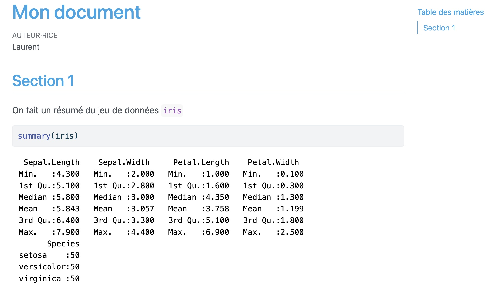

1 Introduction
R est un logiciel libre et gratuit principalement dédié aux analyses statistiques et aux représentations graphiques. Il est gratuit et librement distribué par le CRAN (Comprehensive R Archive Network) à l’adresse suivante : https://www.r-project.org.
L’installation varie d’un système d’exploitation à l’autre (Windows, Mac OS, Linux) mais elle est relativement simple, il suffit de suivre les instructions.
RStudio est une interface facilitant l’utilisation de R. Elle est également gratuite et librement distribuée à l’adresse https://www.rstudio.com.
L’interface RStudio est divisée en 4 fenêtres :
- Console où on peut entrer et exécuter des commandes (taper 1+2)
- Environnement, History où on peut visualiser les objets construits (taper a <- 1+2 dans la console)
- Files, Plots… où on peut visualiser les répertoires et fichiers de l’espace de travail, les graphiques, intaller des packages…
- R script où on conserve les lignes de commandes ainsi que les commentaires sur le travail effectué. Il faut penser à sauvegarder régulièrement ce fichier.
1.1 R Script
Il existe différentes façons de travailler sur RStudio. De façon classique, on peut
- ouvrir un script.
- entrer les commandes dans le script.
- regarder les sorties dans la console (en cliquant sur le bouton run).
- sauver le script.
1.2 Packages
Un package est une ensemble de programmes et fonctions R qui complètent les fonctions existantes par défaut dans le logiciel. Un package est généralement dédié à une méthode ou un champ d’application spécifique. Il existe plus de 18 000 packages disponibles sur le CRAN https://cran.r-project.org. On installe un package en
- utilisant le fonction install.packages dans la console. ou
- ou cliquant sur le bouton Packages.
Une fois le package installé sur la machine, on l’installe avec la fonction library :
install.packages(package.name)
library(packages.name)Exercice 1.1 (Installation et chargement)
Exécuter
iris |> summarize(mean_Petal=mean(Petal.Length))Que se passe t-il ?
On a un message d’erreur. L’opérateur
|>n’est pas reconnu.Installer et charger le package tidyverse et ré-exécuter le code précédent.
1.3 Quarto
Quarto est un langage, compatible avec notamment R et Python, qui permet de créer différents types de documents :
- rapports au format pdf ou rtf
- pages web html
- diaporama pour des présentations (html, beamer, PowerPoint…)
- applications web interactives
- …
qui comportent du code R.
1.3.1 Syntaxe
La syntaxe s’apprend assez facilement (il faut pratiquer), on pourra trouver un descriptif synthétique sur la page https://quarto.org ainsi que dans la cheatsheet dédiée à Rmarkdown puisque quarto est compatible avec markdown. Par exemple :
Caractère en italique ou gras :
*italique*et**gras**donne italique et grasListes non ordonnées
- item 1 - item 2produit
- item 1
- item 2
liste ordonnée :
1. item 1 2. item 2produit
- item 1
- item 2
tableau :
| | Col1 | Col2 | Col3 | |:----:|:----:|:----:|:----:| | Row1 | 1 | 2 | 3 | | Row2 | 1 | 2 | 3 |renvoie
| Col1 | Col2 | Col3 | |
|---|---|---|---|
| Row1 | 1 | 2 | 3 |
| Row2 | 1 | 2 | 3 |
équation latex :
$$\int_a^b f(x)dx=1$$renvoie \[\int_a^b f(x)dx=1\]
1.3.2 Les chunks
Le code R doit être écrit dans des chunks. On peut insérer des chunks avec :
- la raccourci clavier Ctrl + Alt + I (OS X: Cmd + Option + I)
- la bouton Insert -> Code Chunk -> R
- en tapant :
```{r}
commandes...
```Plusieurs options peuvent être spécifiés au chunk en fonction de ce que l’on souhaite voir dans le document, par exemple :
- echo :
TRUEorFALSEpour spécifier si on souhaite afficher le code ; - eval :
TRUEorFALSEpour spécifier si le code doit être évalusé ou non ; - results :
hidesi on ne veut pas voir la sortie du code.
On pourra trouver l’ensemble des options disponibles sur cette page : https://yihui.org/knitr/options/
Exercice 1.2 (Premier document)
Ouvrir un document quarto (File -> New File -> Quarto Document).
Cliquer sur le bouton
Renderet visualiser la sortie html.Obtenir une sortie pdf.
Modifier le document en créant une section Cosinus dans laquelle on tracera la fonction
cosinus, on pourra utiliser le code suivant dans un chunk.x <- seq(-2*pi,2*pi,by=0.01) y <- cos(x) plot(x,y,type="l")Ajouter une section Sinus dans laquelle on tracera la fonction
sinus.
1.3.3 Notebook
L’environnement notebook fonctionne exactement comme un document markdown mais permet de visualiser la sortie eu format html sans avoir à recompiler le document en entier. Cet environnement est donc souvent privilégié pendant la réalisation d’un projet en science des données. Pour créer un notebook, on peut passer par RStudio : File -> New File -> R Notebook ou simplement remplacer
output: html_documentpar
output: html_notebookdans l’entête d’un document markdown.
Transformer le document markdown de l’exercice précédent en notebook. On pourra visualier la sortie en cliquant sur Preview.
1.3.4 Diaporama R
Rstudio propose aussi différents environnements pour construire des diaporamas. On pourra utiliser le menu File -> New File -> Quarto Presentation . On utilisera la même syntaxe que pour les documents markdown. Les slides sont séparés par le symbole ## et les codes R sont toujours insérés dans des chunks.
Exercice 1.3 (Premier document)
- Créer 2 diapositives :
- Titre : Cosinus où on tracera la fonction cosinus.
- Titre : Sinus où on tracera la fonction sinus.
- En modifiant les options des chunks modifier les diapositives de manière à
- ne pas voir le code R mais voir les graphiques
- voir uniquement le code R mais pas les graphiques.
1.3.5 Exemples de styles de documents Quarto
Par défaut l’entête d’un document quarto est de la forme
---
title: "Mon document"
author: "Laurent"
format: html
editor: visual
---Il existe un grand nombre d’options qui permettent d’améliorer le document final. On peut par exemple changer la langue et ajouter une table des matières avec
lang: fr
toc: trueOn peut également utiliser des styles prédéfinis en changeant le thème, par exemple
theme: cerulean
On pourra trouver des compléments sur les différents styles et options ici : https://quarto.org/docs/output-formats/html-themes.html#navigation.
1.4 L’environnement projet de Rstudio
Il permet de créer un répertoire dans l’arborescence et facilite la gestion des chemins. R travaille par défaut dans un répertoire que l’on peut identifier à l’aide de la commande
getwd()Ce répertoire peut être modifié avec la fonction
setwd()ou avec les boutons
Session -> Set Working Directory -> Choose DirectoryTravailler en mode projet permet, entre autres, d’utiliser le répertoire du projet comme répertoire de travail ppar défaut.
Ouvrir Rstudio et executer la fonction
getwd(). Expliquer la sortie.Cette fonction renvoie le répertoire à partir duquel R travaille.
Créer un projet avec
File -> New Project -> New Directory -> New Project
On choisit un répertoire dans l’arborescence qui contiendra le répertoire de cet enseignement.
Exécuter à nouveau la commande
getwd().Le répertoire de travail est maintenant le répertoire du projet.
Fermer le projet en cliquant sur
Close Projecten haut à droite de la fenêtre Rstudio.Ré-ouvrir le projet, toujours en cliquant en haut à droite de la fenêtre Rstudio.